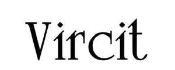

Trade Mark Journal No.2025/017 25 April 2025
UK00004184944 6 April 2025 (3)

- Class 3
- Shampoo; Hair shampoo; Dandruff shampoo; Shampoos; Hair shampoos; Waterless shampoo; Baby shampoo; Baby shampoo mousse; Carpet shampoo; Shampoo bars; Non-medicated hair shampoos; Shampoo for animals; Emollient shampoos; Waterless shampoos; Hair lotion; Shampoos for human hair; Car shampoos; Hair conditioner; Non-medicated shampoos; Pet shampoos; Hair moisturising conditioners; Baby hair conditioner; Hair lotions; Hair moisturizers; Hair moisturisers; Body shampoos; Hair conditioner bars; Shampoos for babies; Deodorant soap; Soap (Deodorant -); Non-medicated pet shampoos; Hair rinses; Hair gel; Vehicle shampoos; Hair rinses [shampoo-conditioners]; Hair rinses [for cosmetic use]; Shampoos for pets; Pets (Shampoos for -); Hair conditioners; Hair styling lotions; Hair balm; Non-medicated hair lotions; Colouring lotions for the hair; Hair spray; Hair gels; Hair sprays; Mousses [toiletries] for use in styling the hair; Cosmetic hair lotions; Shower soap; Hair emollients; Creams (Soap -) for use in washing; Hair bleach; Refill packs for shampoo dispensers; Non-medicated balm for hair; Aloe soap; Hair balms; Hair styling gel; Hair pomades; Hair cosmetics; Hair serums; Oils for hair conditioning; Shaving lotion; Bath lotion; Hair care lotions; Shaving soap; Hair balsam; Conditioners for treating the hair; Detergent soap; Hair mascara; Shampoos for vehicles; Hair tonic [non-medicated]; Hair mousse; Hair tonic; Hair texturizers; Hair oils; Hair tonic [for cosmetic use]; Hair styling gels; Styling gels for the hair; Styling sprays for the hair; Hair creams; Hair conditioners for babies; Hair tonics; Hair styling spray; Antiperspirant soap; Soap (Antiperspirant -); Hair strengthening treatment lotions; Shampoos for pets [non-medicated grooming preparations]; Shaving lotions; Hair relaxers; Shower and bath gel; Bath and shower gel; Shaving soaps; Aftershave lotions; Bath soap; Aloe soaps; Dandruff shampoos, not for medical purposes; Conditioners in the form of sprays for the scalp; After-shave gel; Hair care lotions [for cosmetic use]; Hair tonics [for cosmetic use]; Hair bleaches; Roll-on deodorants [toiletries]; Hair-washing powder; Shower gel; After-shave lotions; Gels for fixing hair; Hair cream; Toothpaste; Bath and shower oils [non-medicated]; Depilatory lotions; Soap products; Conditioners for use on the hair; Perfume; Perfumes; Perfume oils; Perfumery and fragrances; Amber [perfume]; Fragrances; Oils for perfumes and scents; Fragrance sachets; Musk [perfumery]; Cologne; Perfume water; Aromatics for perfumes; Room perfume sprays; Liquid perfumes; Potpourris [fragrances]; Colognes; Scents; Fragrance emitting wicks for room fragrance; Aromatics for fragrances; Perfumery; Perfumes for cardboard; Fragrance refills for non-electric room fragrance dispensers; Cedarwood perfumery; Extracts of perfumes; Eau de cologne [cologne water]; Perfumes for ceramics; Body deodorants [perfumery]; Extracts of flowers [perfumes]; Flowers (Extracts of -) [perfumes]; Extracts of flowers being perfumes; Deodorants for personal use [perfumery]; Ionone [perfumery]; Body fragrances; Perfumeries; Fragrance preparations; Perfume oils for the manufacture of cosmetic preparations; Fragrances for automobiles; Perfumed potpourris; Vanilla perfumery; Household fragrances; Perfumed sachets; Room perfumes in spray form; Fragrance sachets for eye pillows; Natural oils for perfumes; Room fragrances; Perfumery products; Aftershave; Mint for perfumery; Perfumed soaps; Cologne water; Solid perfumes; Scented water for fragrancing; Peppermint oil [perfumery]; Air fragrance preparations; Perfuming sachets; Perfumed soap; Aftershave balms; Scented oils; Scented linen sprays; Synthetic perfumery; Aftershave balm; Scented sachets; Air fragrance reed diffusers; Perfumed powders [for cosmetic use]; Aftershaves; Geraniol for fragrancing; Scented body lotions; Synthetic vanillin [perfumery]; Scented soaps; Perfumed powders; Incense spray; Perfumed creams; Scented body spray; Eau de Cologne; Eau de cologne; Sachets for perfuming linen; Linen (Sachets for perfuming -); Perfumed powder; Essences for fragrancing; Eau de colognes; Scented room sprays; After-sun oils [cosmetics]; Ethereal oils for fragrancing; Perfumed lotions [toilet preparations]; After-shave; Fragrance for household purposes; Aromatherapy lotions; After-shave balms; Scented body lotions and creams; Aftershave creams; Fragrant sachets; Incense sachets; Agarwood [incense]; Natural perfumery; Cosmetics; Perfumed water; Eau de parfum.
Maryan Sadik